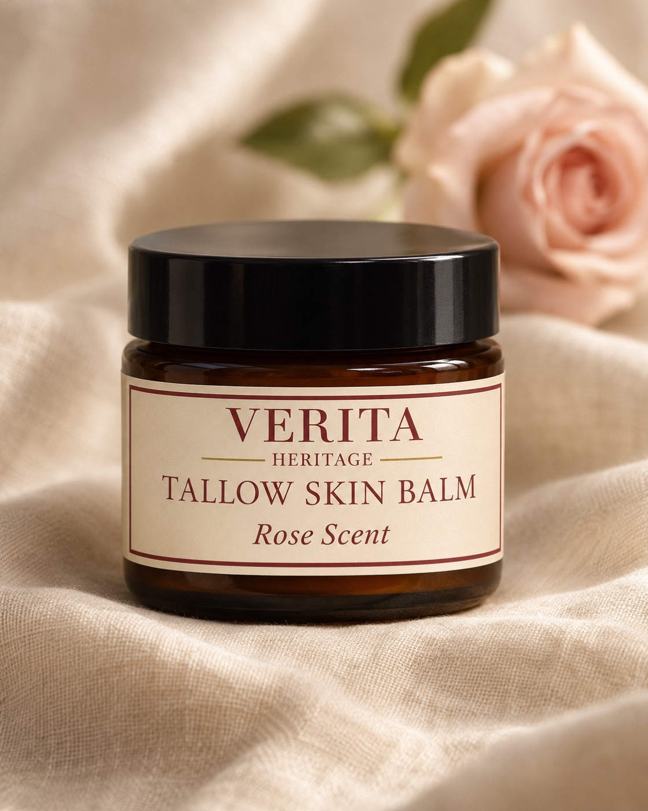
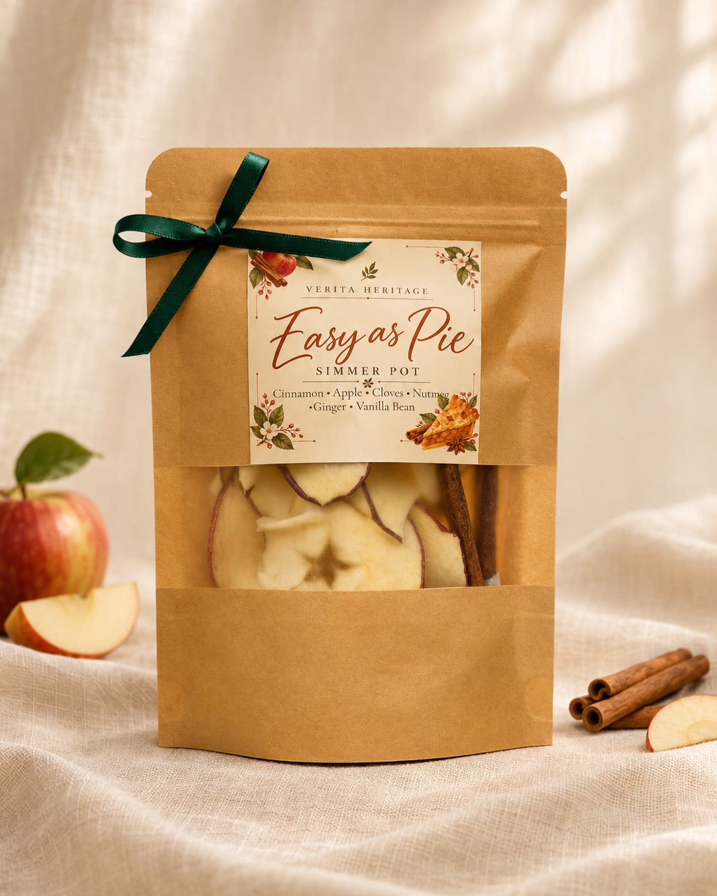

Rose Scent Tallow Skin Balm
Meet Verita Heritage Rose Scent Tallow Skin Balm, a rich, rose-scented moisturizer made in small batches by our family in Texas.
Design preview · Product photography shown is illustrative
Small-batch skincare · Made in Texas
Our abuelita’s remedies helped shape the way we care for our family. Today we make tallow balms and everyday skincare in small batches and share them with yours.
Shop everyday careMeet our family
The Verita collection
Meet Verita Heritage Rose Scent Tallow Skin Balm, a rich, rose-scented moisturizer made in small batches by our family in Texas.

A Verita Heritage Christmas gift box with small gifts to open throughout the Christmas season.

Fill your kitchen with the scent of dried apples, cinnamon, and warm spices with the Easy as Pie Simmer Pot from Verita Heritage.
The Christmas collection
Start on Christmas Day and unwrap one small gift at a time as Epiphany approaches.
Explore the Christmas boxLearn what beef tallow is, what rendering means, and why Verita Heritage uses tallow in a balm.
Find out how much tallow balm to use and how to warm and spread it on dry hands and elbows.
Compare the feel, spread, and everyday uses of a concentrated tallow balm and a typical lotion.